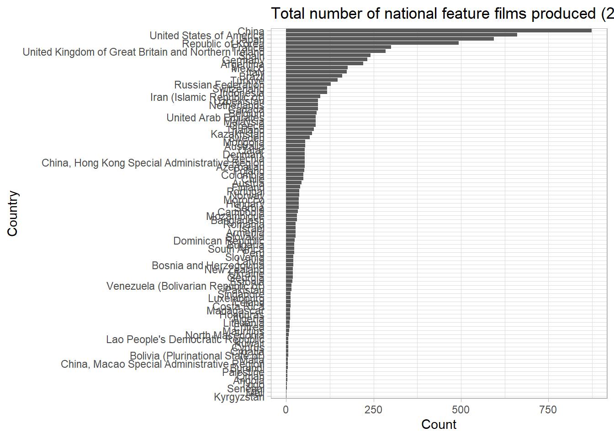
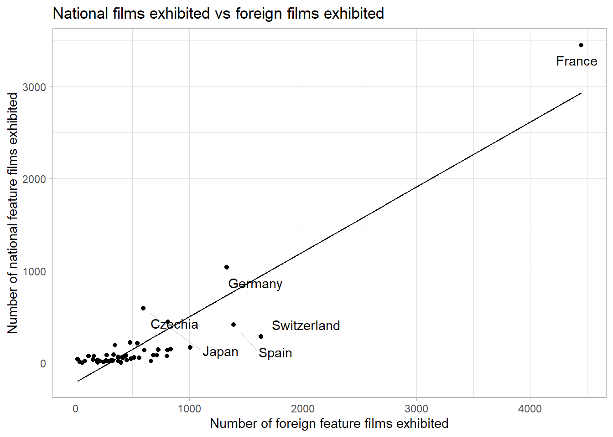
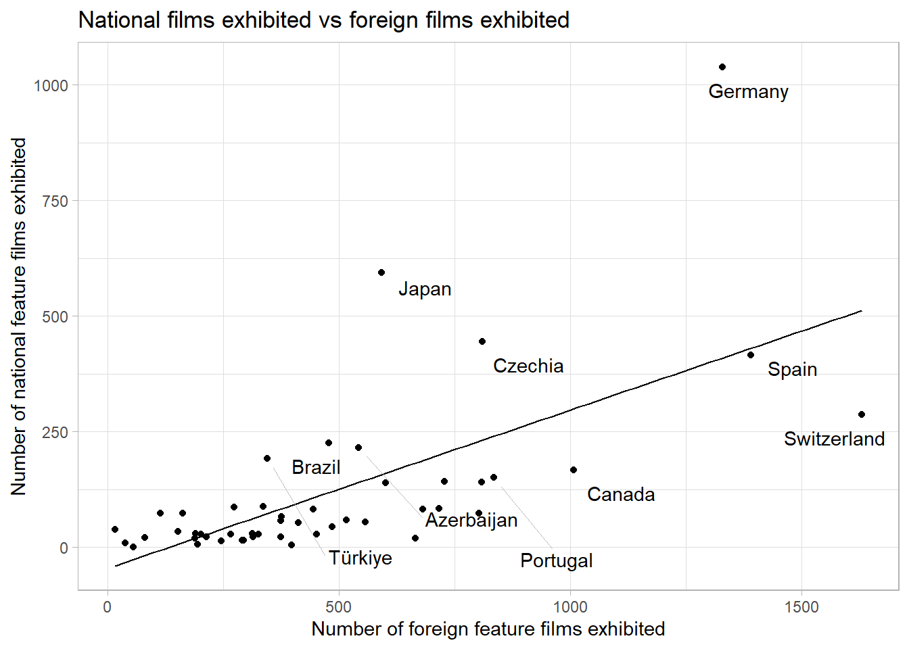
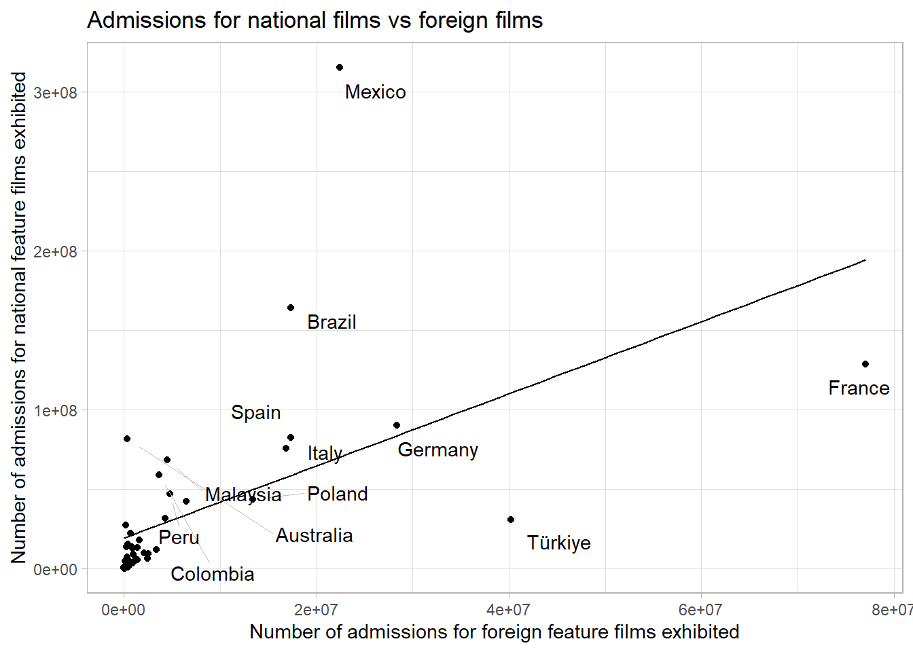
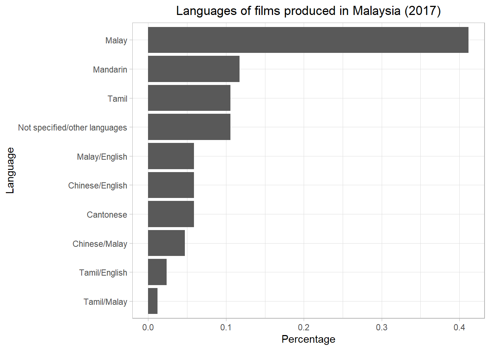
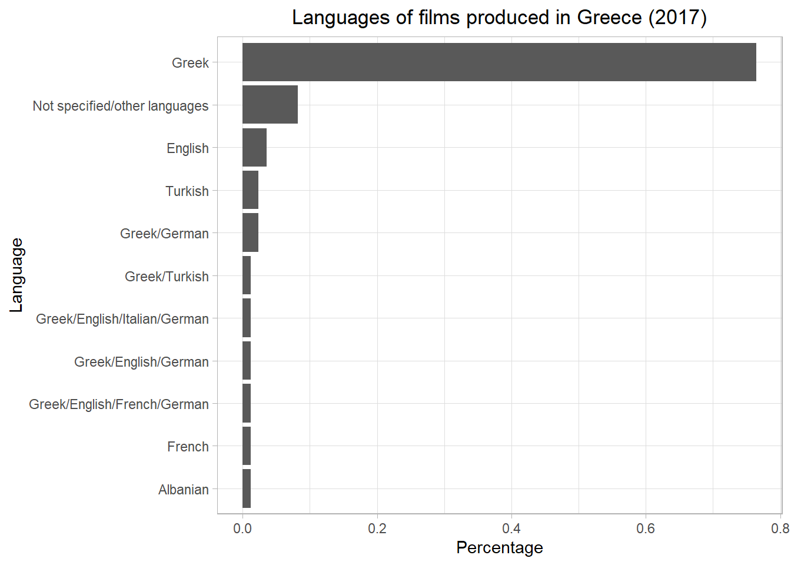
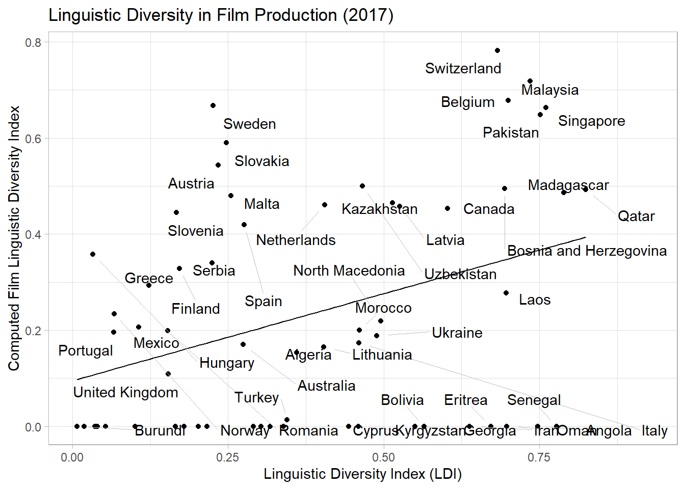

library(tidyverse)
library(rio)
library(ggrepel)
library(rvest)AH-FTME101 Introduction to Film, Theatre, and Media
Spring 2024
Load the packages:
Introduction
The film industry nowadays is a rather globalized market, with interconnectedness and interdependence involved in various stages of the creation of a film – including pre-production, filming, and post-production processes – on an international scale. This phenomenon is driven by technological advancements, increased international collaboration, and the breaking down of cultural barriers. As a result, filmmakers from different parts of the world now have greater access to resources, markets, and audiences, fostering a rich exchange of ideas, talent, and diverse cultural perspectives in the creation of cinematic content.
In such a context, it might be relevant to study the place held by national values in film production: how can film production reveal the extent of the predominance of patriotic values in a country?
The database we are going to use was published by the UNESCO Institute for Statistics (UIS). It originates from the 2005 Convention on the Protection and Promotion of the Diversity of Cultural Expressions, which promotes more equitable global market shares and distribution of cultural and creative industries, including the production of films in developing countries (UNESCO, 2005). The data spans from 2011 to 2017 and includes information on up to 153 countries; however, not all 153 countries will be considered in the workshop due to the presence of missing values.
Let’s focus on the year 2017 since this is the most recent year available in the data set. A feature film is a full-length film, usually at least 90 minutes long. Let’s start with seeing the total number of national feature films produced in each country.
total_national_films <- read_csv("https://raw.githubusercontent.com/ucrdatacenter/projects/main/AH-FTME101/2024h1/total_number_of_national_feature_films_produced.csv") %>%
select(LOCATION, Country, Time, Value) %>%
filter(!is.na(Value)) %>%
filter(Time == 2017)
ggplot(data = total_national_films, mapping = aes(x = reorder(Country, Value), y = Value)) +
geom_col() +
coord_flip() +
labs(
x = "Country",
y = "Count",
title = "Total number of national feature films produced (2017)"
) +
theme_light()
Popularity of Nationally-Produced Films
To some extent, it can be argued that the predominance of patriotic values in a country can be analyzed through the popularity of films; hence, how popular are nationally-produced films as compared to foreign feature films?
Let’s first investigate how many national feature films are actually exhibited in movie theaters as compared to foreign feature films. First, import and reorganize the data:
exhibited_national <- read_csv("https://raw.githubusercontent.com/ucrdatacenter/projects/main/AH-FTME101/2024h1/number_of_all_national_feature_films_exhibited.csv") %>%
select(LOCATION, Country, Time, Value) %>%
filter(!is.na(Value)) %>%
filter(Time == 2017)
exhibited_foreign <- read_csv("https://raw.githubusercontent.com/ucrdatacenter/projects/main/AH-FTME101/2024h1/number_of_all_foreign_feature_films_exhibited.csv") %>%
select(LOCATION, Country, Time, Value) %>%
filter(!is.na(Value)) %>%
filter(Time == 2017)We can combine both data sets in a single one, so that making visualizations will be easier.
exhibited_films <- exhibited_national %>%
left_join(exhibited_foreign, by = c("LOCATION", "Country", "Time")) %>%
rename(
national = Value.x,
foreign = Value.y
)
ggplot(data = exhibited_films, mapping = aes(x = foreign, y = national, label = Country)) +
geom_point() +
geom_smooth(method = "lm", se = FALSE, color = "black", size = 0.5) +
geom_text_repel(
vjust = -0.5,
hjust = 1,
box.padding = 0.5,
point.padding = 1,
segment.color = "grey",
segment.size = 0.2
) +
labs(
title = "National films exhibited vs foreign films exhibited",
x = "Number of foreign feature films exhibited",
y = "Number of national feature films exhibited"
) +
theme_light() +
theme(legend.position = "none")
It is rather difficult to read the bottom of the graph, since France is an outlier – exhibiting a much larger total number of feature films than any other country (but also exhibiting a much larger number of national feature films as compared to other countries). Let’s remove it and plot the same visualization.
exhibited_films_2 <- exhibited_films %>%
filter(Country != "France")
ggplot(data = exhibited_films_2, mapping = aes(x = foreign, y = national, label = Country)) +
geom_point() +
geom_smooth(method = "lm", se = FALSE, color = "black", size = 0.5) +
geom_text_repel(
vjust = -0.5,
hjust = 1,
box.padding = 0.5,
point.padding = 1,
segment.color = "grey",
segment.size = 0.2
) +
labs(
title = "National films exhibited vs foreign films exhibited",
x = "Number of foreign feature films exhibited",
y = "Number of national feature films exhibited"
) +
theme_light() +
theme(legend.position = "none")
The regression line shows that movie theaters in most countries tend to exhibit more foreign films than national films. For example, 500 foreign films would be exhibited for 125 national films only, which is consistent with the globalized nature of the film industry. Japan, nevertheless, seems to exhibit as many national films as foreign films. This could be explained by the country’s strong cultural identity: since Japan has a robust and influential domestic film industry, Japanese audiences may be equally drawn to domestic and foreign films, leading to a more balanced exhibition of national and international content. Moreover, many of the plotted countries show a rather low overall number of films exhibited (below 1625 for the year 2017), which could be explained by these countries’ own distribution networks, market size, and cultural preferences.
Although it is interesting to investigate the number of national films exhibited as compared to the number of foreign films exhibited in movie theaters, we still have no information on consumer behavior. This can be evaluated with ticket sales – what we call “admissions”. Let’s now plot the number of admissions for all national films exhibited against the number of admissions for all foreign films exhibited. First import and reorganize the data:
admissions_national <- read_csv("https://raw.githubusercontent.com/ucrdatacenter/projects/main/AH-FTME101/2024h1/number_of_admissions_for_all_national_feature_films_exhibited.csv") %>%
select(LOCATION, Country, Time, Value) %>%
filter(!is.na(Value)) %>%
filter(Time == 2017)
admissions_foreign <- read_csv("https://raw.githubusercontent.com/ucrdatacenter/projects/main/AH-FTME101/2024h1/number_of_admissions_for_all_foreign_feature_films_exhibited.csv") %>%
select(LOCATION, Country, Time, Value) %>%
filter(!is.na(Value)) %>%
filter(Time == 2017)Similarly, combine both data sets to make visualizations easier to create:
admissions <- admissions_national %>%
left_join(admissions_foreign, by = c("LOCATION", "Country", "Time")) %>%
rename(
national = Value.x,
foreign = Value.y
)
ggplot(data = admissions, mapping = aes(x = national, y = foreign, label = Country)) +
geom_point() +
geom_smooth(method = "lm", se = FALSE, color = "black", size = 0.5) +
geom_text_repel(
vjust = -0.5,
hjust = 1,
box.padding = 0.5,
point.padding = 1,
segment.color = "grey",
segment.size = 0.2
) +
labs(
title = "Admissions for national films vs foreign films",
x = "Number of admissions for foreign feature films exhibited",
y = "Number of admissions for national feature films exhibited"
) +
theme_light() +
theme(legend.position = "none")
Yet again, the regression line indicates a general preference from audiences for foreign films over national films – in accordance with the tendency from movie theaters to exhibit more foreign films than national films. Note however that the scales for the x- and y-axes are different.
Hence, foreign feature films seem generally more popular than national feature films in most countries: not only do movie theaters exhibit a larger number of foreign films than national films, audiences also indicate a preference for foreign films. In this respect, let’s now investigate the place of linguistic diversity in film production.
Linguistic Diversity in Film Production
Patriotic values can also be analyzed through the languages of film production, meaning the languages involved in the creation of films – including dialogue, narration, and any written or spoken elements. To what extent does film production reflect linguistic diversity in different countries?
First import the data:
languages_film_production <- import("https://github.com/ucrdatacenter/projects/raw/main/AH-FTME101/2024h1/tidy_languages_of_film_production.xlsx")Using View(languages_film_production), you can notice that many countries use several languages to produce their films. We can select a few countries to analyze the diversity of language in their film production. According to Wikipedia, many languages are spoken in Malaysia: the official language is Malay, but there are also a few regional or state dialects used, such as Mandarin Chinese or Tamil (for more information, see https://en.wikipedia.org/wiki/List_of_official_languages_by_country_and_territory). Let’s then plot the number of languages used in Malaysian film production.
malaysia <- languages_film_production %>%
filter(Country == "Malaysia")
ggplot(data = malaysia, mapping = aes(x = reorder(Language, Percentage), y = Percentage)) +
geom_col() +
coord_flip() +
labs(
x = "Language",
y = "Percentage",
title = "Languages of films produced in Malaysia (2017)"
) +
theme_light() +
theme(
legend.position = "top",
plot.title = element_text(hjust = 0.5)
)
The predominant language used in Malaysian film production is the official language, but we can also notice that this only represents approximately 40% of the Malaysian films produced in 2017. Indeed, many films are produced in other languages widely spoken in the country, or with a combination of these languages. Nevertheless, note that there were only 85 films produced in Malaysia that year.
Let’s now look at a country with less linguistic diversity, such as Greece. According to Wikipedia, Greece has one official language (Greek) and no minority language.
greece <- languages_film_production %>%
filter(Country == "Greece")
ggplot(data = greece, mapping = aes(x = reorder(Language, Percentage), y = Percentage)) +
geom_col() +
coord_flip() +
labs(
x = "Language",
y = "Percentage",
title = "Languages of films produced in Greece (2017)"
) +
theme_light() +
theme(
legend.position = "top",
plot.title = element_text(hjust = 0.5)
)
This is also reflected in their film production, with over 75% of Greek films (of a total of 85 films produced in 2017) in Greek. It is nonetheless somewhat surprising to see that a few films have also been produced in languages other than Greek (although very few: 4% in English and 8% in non-specified languages, for example).
Nevertheless, only studying two specific cases might not be representative of a general pattern; we can instead directly analyze how countries’ linguistic diversity is related to linguistic diversity in their film production. Accordingly, the Linguistic Diversity Index (LDI) can be used to measure linguistic diversity in a specific location or community, by providing a numerical value quantifying the variety of languages spoken and the distribution of speakers across those languages. More specifically, it represents the probability that two individuals selected at random in a given area will have different mother tongues (Greenberg, 1956). Hence, it returns a value from 0 to 1: 0 indicating that everyone in the population of interest speaks the same language (so the probability to have different mother tongues is null) and 1 entailing an equal number of speakers for every language (everyone has a different mother tongue).
We can get the LDI for each country from Wikipedia (luckily, the data is also from 2017):
ldi <- read_html("https://en.wikipedia.org/wiki/Linguistic_diversity_index#cite_note-6") %>%
html_elements("table") %>%
pluck(2) %>%
html_table() %>%
select(-Rank)The LDI is computed for each country according to the formula established by Greenberg (1956):
\[ \text{LDI} = 1 - \sum_{i=1}^{S} \left(p_i^2\right) \]
where \(S\) is the total number of different languages spoken in the given country and \(p_i\) the percentage of speakers in the \(i^{th}\) language in this country.
We can apply the same idea to our data set by first performing a few transformations: to be able to compute the film LDI, we need one single language only for every observation. We can assume that the predominant language used in films produced in multiple languages is given the first position in the “Language” variable. Thus, if films were produced in Arabic/French/Portuguese/Amazigh, only Arabic will be considered. The film LDI can be computed after adjusting the other variables accordingly. \(p_i\) would then be the percentage of films produced in the \(i^{th}\) language.
ldi_languages_film <- languages_film_production %>%
mutate(
Language = str_split(Language, "/", simplify = TRUE)[, 1]
) %>%
group_by(Country, Language) %>%
summarise(
count = sum(`Number of films produced`),
total = Total,
percentage = sum(Percentage)
) %>%
unique() %>%
ungroup() %>%
group_by(Country) %>%
summarise(
film_ldi = 1 - sum(percentage^2)
)Combining both data sets will make it easier to plot the actual LDI with the corresponding calculated film LDI for each country:
ldi_combined <- ldi_languages_film %>%
left_join(ldi, join_by(Country == `Country / region`))
ggplot(data = ldi_combined, mapping = aes(x = LDI, y = film_ldi, label = Country)) +
geom_point() +
geom_smooth(method = "lm", se = FALSE, color = "black", size = 0.5) +
geom_text_repel(
vjust = -0.5,
hjust = 1,
box.padding = 0.5,
point.padding = 1,
segment.color = "grey",
segment.size = 0.2
) +
labs(
title = "Linguistic Diversity in Film Production (2017)",
x = "Linguistic Diversity Index (LDI)",
y = "Computed Film Linguistic Diversity Index"
) +
theme_light() +
theme(legend.position = "none")
The graph suggests little correlation between linguistic diversity observed in a country and linguistic diversity in its film production: the points are scattered across the graph, most countries lying rather far from the regression line. This can be verified by computing the correlation coefficient between both variables:
ldi_correlation <- ldi_combined %>%
na.omit(film_ldi, LDI) %>%
summarise(
correlation_coeff = cor(film_ldi, LDI)
) %>%
print()# A tibble: 1 × 1
correlation_coeff
<dbl>
1 0.373The correlation coefficient indeed demonstrates a moderate positive correlation between linguistic diversity within a country and its linguistic diversity in film production. Consequently, linguistic diversity in a country’s film production only moderately reflects the country’s own linguistic diversity; in other words, a country with a high LDI does not necessarily use more languages to produce its films.
Conclusion
In conclusion, foreign feature films are much more popular than national feature films in almost every country from the data set: there usually is a larger number of foreign feature films exhibited in movie theaters than domestic feature films. This tendency is also reflected in audiences’ preference for foreign films over national films. Furthermore, film production does not necessarily reflect linguistic diversity within countries: it seems that films hardly represent other languages – including regional or minority languages – than the official language spoken in their own country. Therefore, patriotic values in film production do not appear to hold a great importance in most countries.
References
Greenberg, J. H. (1956). The Measurement of Linguistic Diversity. Language, 32(1), 109–115. https://doi.org/10.2307/410659
UNESCO. (2005). Convention on the Protection and Promotion of the Diversity of Cultural Expressions. In Convention on the protection and promotion of the diversity of cultural expressions: Paris, 20 October 2005 (pp. 1–137). Paris; UNESCO.
UNESCO Institute for Statistics (2017). Uis statistics. UIS Statistics. http://data.uis.unesco.org/#
Wikipedia contributors. (2023a, November 1). Linguistic diversity index. Wikipedia. https://en.wikipedia.org/wiki/Linguistic_diversity_index#cite_note-6
Wikipedia contributors. (2023b, December 8). List of official languages by country and territory. Wikipedia. https://en.wikipedia.org/wiki/List_of_official_languages_by_country_and_territory